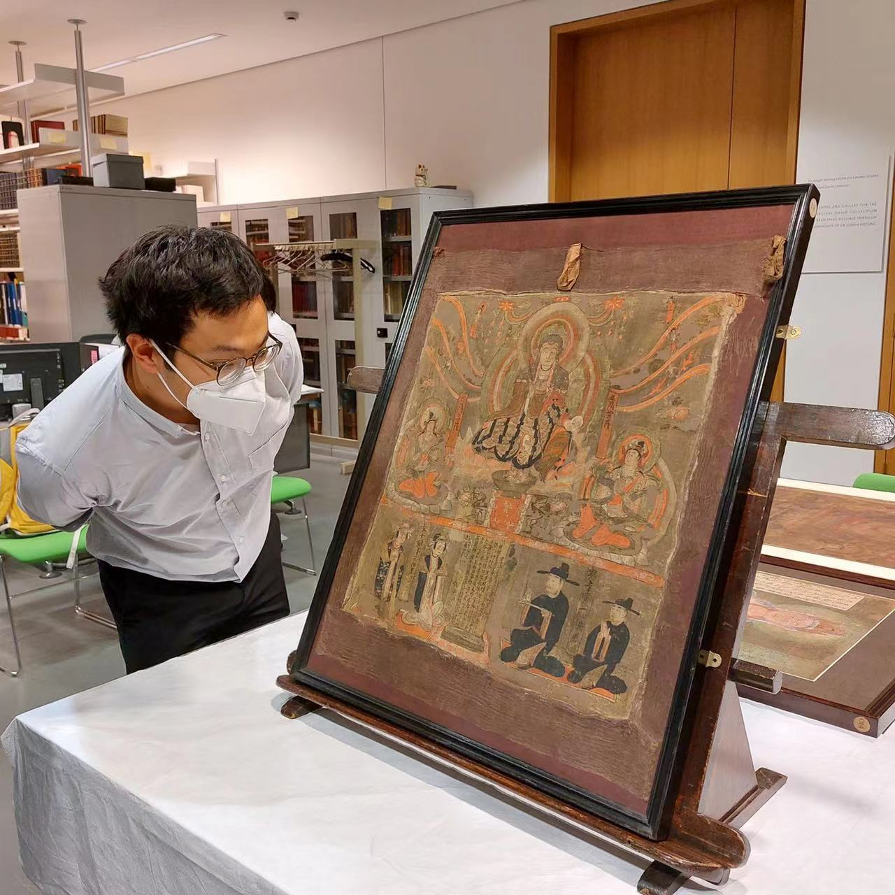
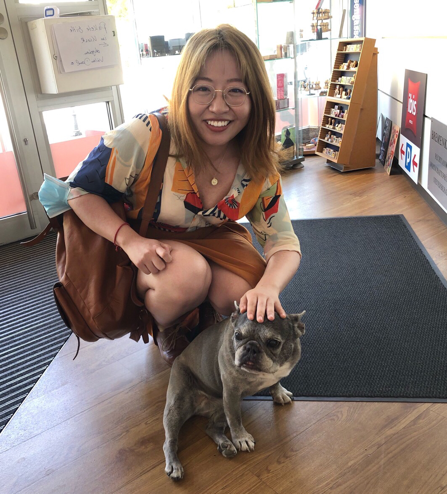

Fengyu WANG M.A.
Research Associate & PhD Candidate
Institute of East Asian Art History
University of Heidelberg
E-mail: fengyu.wang[at]zo.uni-heidelberg.de
Project: Japanese Handscrolls and Digital Explorations:
Materiality, Practices and Locality
|
Shimin ZHANG M.Phil |
|  |
Xiaojie CHANG M.A. |
|
Jia XIE M.A. |
 |
Links
>>> DFG Priority Program "The Digital Image": Japanese Handscrolls and
Digital Explorations: Materiality, Practices and Locality
>>> Heidelberg East Asian Digital Humanities (HEADs) Blog (in Chinese)
>>> Heidelberg Research Architecture (HRA)
|
Student Assistant |